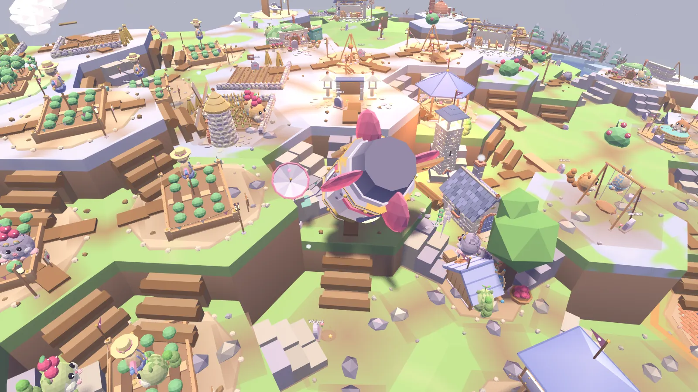
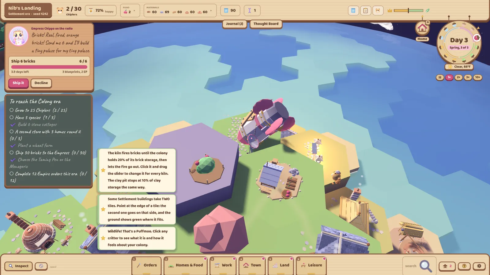
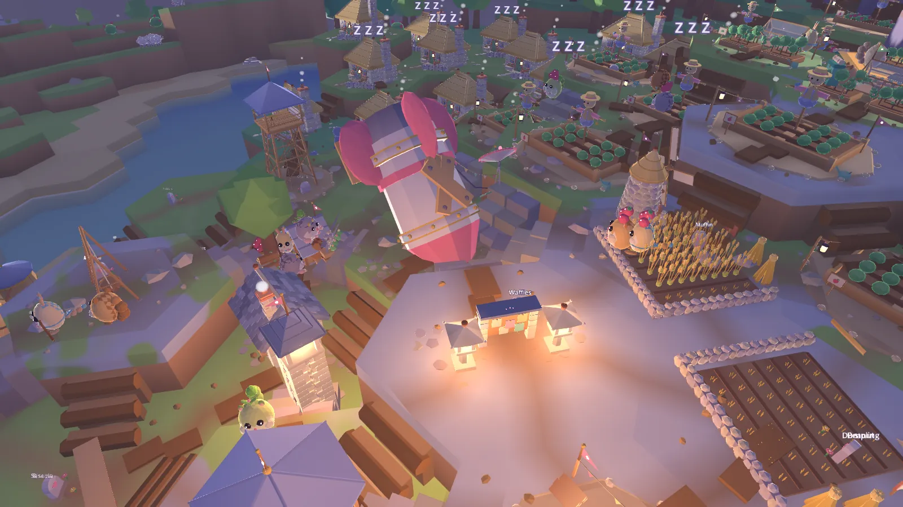
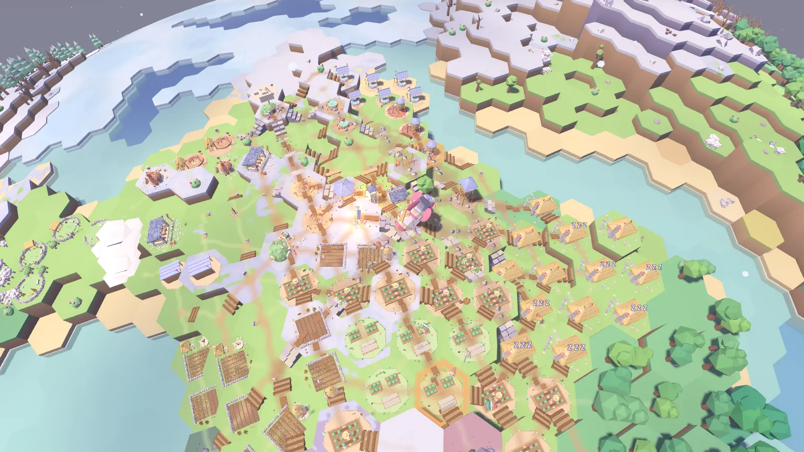

MISSION C.H.I.P.L.E.R.
Have you ever wanted to grow a whole colony from ONE little guy? A single Chipler crash-lands his rocket on a tiny round planet, copies himself, and bit by bit turns into a busy colony with farms and forges (and even a railway!). It’s a cozy little colony sim in soft pastel colours, and every planet you land on is different!

- Status
- In development
- Release
- No date yet
- Engine
- Godot 4
- Genre
- Cozy colony sim
- World
- A tiny round planet of hex tiles
- Platform
- PC
- Team
- @Jonjoe1001, @Moonshot, @Ryansbuilds
One little guy, one tiny planet
You pick a landing spot on a random little planet, and Nib-001 crash-lands there in his rocket. That’s your whole colony. One guy! Luckily, Chiplers multiply by perfect duplication, so Nib copies himself... except the copies don’t always come out so perfect. One walks faster, one loves a nap, one can carry two things at once. Later on you get to evolve whole new species (Barkbiters, Burrowers, Thinkers and more), and each one has its own look and its own favourite jobs.

Empress Chippa is on the radio
The Chipler Empire sent Nib here with ONE job: exploit this world for the glory of the Empire. So Empress Chippa keeps calling in on the radio with orders (her very first message is “Mummy’s peckish.”). Ship the goods and she pays you in Blueprints, or just say no (she’ll remember that, though!). Every choice tips a balance scale between Empire Favor and Planet Harmony, so how much do you really owe her?

Climb the ages
You start at a Crash Site and work your way up through the Outpost, the Settlement and the Colony, where you get mines, forges and a railhead. Each era comes with a charter of goals from the Empire, and ticking them all off opens up the next one. Along the way there are wild critters to meet and tame, seasons, wildfires, floods and blizzards, and you can even dig into the land and build it up in terraces.
- Cozy, Normal or Hard. On Cozy nobody dies (a sad Chipler just packs a tiny bag and leaves). On Hard the food spoils and Chiplers can get sick!
- You can click on anyone! Every Chipler has their own stats card with their needs, mood, friends and quirks.
- It’s all made in code. The planet, the Chiplers, every building and even the sounds are built from code in Godot. No asset packs!


Where it is now
MISSION C.H.I.P.L.E.R. is in development, and there’s no release date yet. The first four eras are already playable, all the way from the crash landing to the railway, and there’s saving, an intro cutscene and three difficulty modes. Era 5 is next!
I’ll post progress in the dev log as it comes together!